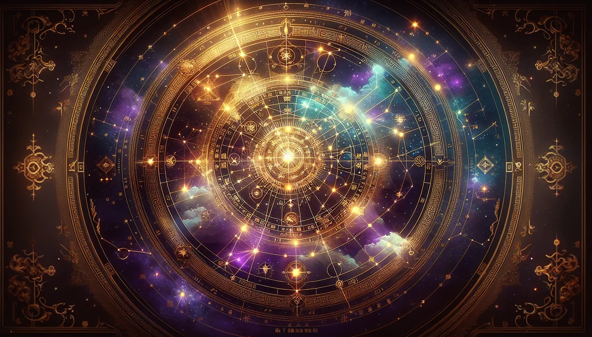

📜 源頭脈絡
夜空裡有一顆星，幾乎不動。
所有星辰繞著它轉，它就站在那裡。古人叫它紫微星，也叫北極星。沒有GPS的年代，走夜路的人抬頭找到它，就知道北邊在哪。
整個紫微斗數，就是從這顆「不動的星」開始的。
唐末宋初・陳摶
傳說第一個把天上的星搬到人身上的人，是華山道士陳摶。陳希夷。活了多久沒人說得準，有人說八十幾，有人說一百多。反正活得夠久，看的人夠多。
他做了一件那個年代沒人敢想的事：把北極星和周圍的星群，對照一個人的出生時間，排成一張圖。十四顆主星，各有各的脾氣。
紫微是帝王，天生覺得自己該坐主位。天機是軍師，腦子轉太快，常常身體跟不上。太陽是那個永遠在照顧別人的人，累死了也不說。太陰安安靜靜吸收一切，像月亮，反射的是別人的光。
七殺是將軍，敢拚敢殺但孤獨。破軍是先鋒，走到哪裡哪裡翻。貪狼最有魅力，但慾望也最旺。天府管家型，穩，錢放他那裡不會少。天相外交官，兩邊都不得罪。天梁是長輩，什麼都想管。天同是小孩，舒服最重要。巨門是那張嘴，能成事也能壞事。廉貞情緒最複雜，武曲跟錢最有緣。
十四顆，沒有好壞。
像一副撲克牌裡的十四張臉，每張都有它最能贏的那一局。重點不是拿到什麼，是打在哪裡。
明代・定稿
陳摶之後幾百年，紫微斗數一直在道教圈子裡口耳相傳，沒有正式的教科書。到了明代，有人把各路口訣和手抄本匯整成《紫微斗數全書》。十二宮位、四化飛星、大限流年，這才算正式定型。
十二宮位就是一個人生活的十二個房間。命宮是「我是誰」，夫妻宮是「我跟誰在一起」，財帛宮是「我怎麼賺錢」，官祿宮是「我做什麼工作」，福德宮是「我內心到底快不快樂」。每個房間裡坐了不同的星，星的組合決定那個房間的氛圍。
命宮坐了紫微，不是說您是皇帝。是說您骨子裡有一種「我要自己說了算」的氣場。夫妻宮坐了貪狼，不是說會花心。是說感情裡面沒有吸引力和變化感，您會窒息。
最精妙的是四化飛星。化祿、化權、化科、化忌，四種能量，每年飛進不同的宮位。同一顆星，十年前化祿是財源滾進來，十年後化忌可能在同一個位置被卡死。命盤不是靜態的照片。它一直在動。
這個排列不是命運的判決。是出廠設定。知道設定，才知道可以怎麼調。
紫微的十四主星，說白了就是十四種人格原型。心理學在做的事情其實一樣，只是工具不同。紫微用星盤，心理學用問卷。
大五人格（Big Five）是當代心理學公認最穩定的人格分類框架，五個維度：開放性、盡責性、外向性、親和性、神經質。幾十年、跨文化的研究反覆驗證，這五個維度不管在哪個國家、哪個年齡層，都站得住腳。
紫微十四主星和大五之間存在可以對應的結構。紫微、天府型的人，做事有章法，對應高盡責性。七殺、破軍型，坐不住，想突破，對應高開放性。天機、太陰型，感受力極強，情緒波動大，對應較高的神經質敏感度。太陽、巨門型，需要舞台，喜歡表達，對應高外向性。天同、天梁型，柔軟包容，自帶長輩氣場，對應高親和性。
十二宮位和心理學裡的「生活領域評估」也有平行之處。臨床心理師在做個案評估的時候，經常把一個人的生活拆成幾個核心領域逐一檢視：自我認同、親密關係、家庭、職業、健康、社交。紫微的十二宮位做的是同一件事。只是它在一千年前就把框架建好了。
心理學近年還有一個重要發現：人格不是固定的。重大生命事件（結婚、失業、生病）會讓人格特質產生明顯變化。紫微斗數的四化飛星，描述的就是「同一顆星在不同時期展現不同面貌」。一千年前的命理師和今天的心理學家，用不同的語言講同一件事：人會變。但變的方式有跡可循。
每顆星都有氣味。這不是附會。
紫微的氣味是乳香。點乳香的時候，煙往上走，緩慢、穩定。聞的人通常會不自覺把背挺直。那個反應，就是紫微星的身體記憶。
貪狼是茉莉。第一秒甜到退後一步，三秒之後聞到底層的涼和微苦。貪狼就是這樣：表面的魅力只是入口，底下的層次才是讓人走不掉的原因。
天機是佛手柑。輕、跳、帶一點酸甜。聞完腦子清楚了，但不持久。天機就是轉速極快但續航力要補給的頭腦，佛手柑幫它把飄在半空的念頭拉到地面。
七殺遇到岩蘭草會安靜。泥土的厚重剛好壓住骨子裡那股躁。天同碰到甜橙會笑。那個果香把他帶回最沒有壓力的時候。太陽型的人聞到青草香會深呼吸，因為那一刻，他終於可以不照亮任何人。只是曬著自己。
知道自己命宮坐了哪顆星，就知道哪瓶精油讓您第一秒就說「對，就是這個」。
星曜是性格。精油是翻譯。一個用天上的語言寫，一個用鼻子的語言寫。寫的是同一個您。
✦ 命宮主星，就是身體最熟悉的那瓶精油。有時候不用算，聞就知道了。